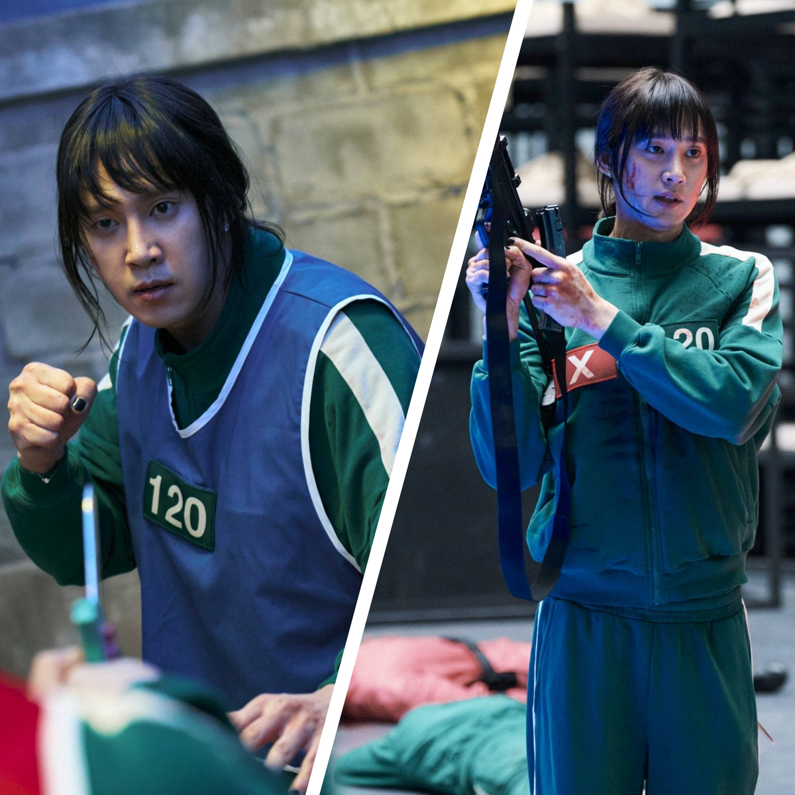

об игроке 120
Чо Хен Джу это один из игроков в сериале игра в кальмара и лучший трансгендерный персонаж в истории телевидиния. А еще она спасает бабку и беременную девушку

еще она умеет пользоваться оружием и отлично драться
Ее характеристика:
- сильная
- эмпатичная
- самоотверженная
- умеет дружить